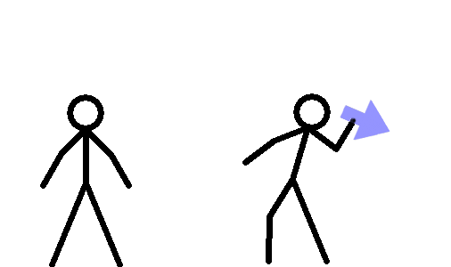
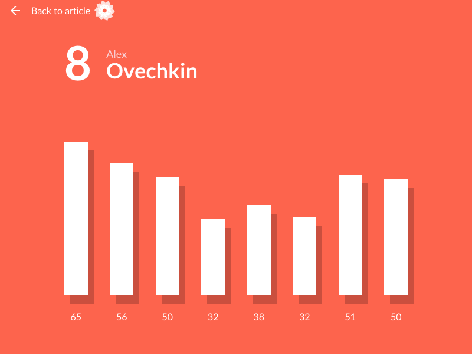

PROCESO DE TOMA DE DECISIONES
La toma de decisiones es un proceso sistemático y racional a través del cual se selecciona una alternativa de entre varias, siendo la seleccionada la mejor para nuestro propósito.
¿Sabemos tomar decisiones?
¿Poseemos algún patrón para tomar nuestras decisiones?
¿Dejamos nuestras decisiones al azar?
Tomar una decisión correcta es parte fundamental de este proceso ya que esta influirá en el correcto funcionamiento de la organización, generando repercusiones positivas o negativas según su elección.
Tipos de Decisiones
Individuales
Se dan cuando el problema es bastante fácil de resolver y se realiza con absoluta independencia, se da a nivel personal y se soluciona con la experiencia.
Gerenciales
Son las que se dan en niveles ejecutivos, para ello se ha de buscar orientación, asesorías, etc.
Operativas
Se generan en niveles operativos, se encuentran establecidas en las políticas y los manuales, son procesos específicos de la organización y se aplican mediante técnicas cualitativas y cuantitativas.
Otros tipos de de desciciones
- Programables
- En condiciones de Certidumbre
- En condiciones de Incertidumbre
- De emergencia
- Rutinarias
Etapas del Proceso de Toma de decisiones
Identificar y analizar el problema
Origina una disminución de rendimiento y productividad, impidiendo que se logren los objetivos.
Investigación u obtención de información
Recopilación de toda la información necesaria para la adecuada toma de una decisión.
Determinación de parámetros
Se toman en cuenta aspectos como : restricciones, efectos posibles, costos , variables y objetivos con el fin de definir las bases con las cuales aplicar un método y determinar diversas alternativas.
Construcción / Aplicación de la alternativa
Se eligen y aplican las técnicas, herramientas o los métodos mas adecuados para plantear distintas alternativas de decisión.
Especificación y evaluación de las alternativas
Después de construir varias alternativas se elige la que en relación con los efectos y resultados esperados sea la más adecuada.
Implantación
Una vez que se ha elegido la alternativa optima, se implantará y llevará seguimiento de los resultados.
Tecnicas cualitativas para la toma de desciciones
Lluvia de ideas
Técnica especialmente efectiva para generar ideas nuevas. El procedimiento consiste en que se reúne un grupo de personas interesadas en solucionar un problema en particular.
SINÉCTICA
Este método se asemeja a la lluvia de ideas, pero la solución final al problema se obtiene con una metodología más estructurada. La sinéctica tiene como aspectos positivos que es posible evaluar un problema mucho más complejo, debido a que el problema se aborda por segmentos.
LA TECNICA DELPHI
Es un método para predecir el futuro utilizando expertos en el área a la cual pertenece el problema. Se conforma un grupo de expertos en el campo específico y ellos en forma independiente predicen el futuro. A cada miembro se le distribuye una serie de preguntas relacionadas con su área de especialización.
La pecera
En esta técnica el grupo se sienta en forma de círculo y en el centro de este se coloca una silla. Cuando alguien se sienta en el centro, solo esa persona puede hablar.
Tecnicas cualitativas para la toma de desciciones
LA MATRIZ DE RESULTADOS
Es un instrumento muy utilizado que muestra los posibles resultados que se pueden conseguir, al seguir cursos alternativos de acción (estrategias) en diferentes circunstancias.
ÁRBOLES DE DECISIÓN
Un método eficaz de combinar conceptos de probabilidades y valor (o satisfacción) esperados en la solución de problemas complejos que involucran tanto incertidumbre como un gran número de alternativas.
PROGRAMACIÓN LINEAL
Es de valor cuando se debe escoger entre alternativas demasiado numerosas para evaluarlas con los métodos convencionales. Al usar la programación lineal, podemos determinar combinaciones óptimas de los recursos de una firma para alcanzar cierto objetivo. Se tratan de métodos gráficos y simples de aplicación de esta técnica.
TECNICAS ECONOMICAS

TEORIAS DE PREFERENCIAS.
Esta teoría encuentra el riesgo, dentro de los análisis de los problemas comerciales que en gran medida involucran inseguridad e incertidumbre, para los altos ejecutivos es de gran importancia que tengan un mismo conocimiento, de la actitud empresarial al tomar decisiones bajo riesgo.
TEORIA DE UTILIDADES.
Todo inversionista y administrador financiero el aspecto principal es la decisión que se tome, sea para incrementar las utilidades de una empresa relacionada con periodo y de acuerdo a las circunstancias económicas, sociales y políticas del país. Para lograr este incremento, existen criterios para maximizar las utilidades, entre estos tenemos: Reducir al máximo los costos. Reducir en la medida de lo posible los gastos. Evaluar los cambios en los activos.